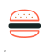

Hey lunch, Meet park.
step 1:
Think

step 2:
Eat
step 3:
Walk
Welcome to your lunch hour.
an app to help you have a productive, vitamin-C filled lunch hour.
Get started by searching above and check out all your amazing options on the right. A map of closest parks will show up here, so get out there and eat near a tree.
this app was developed by shawn ebeyer using the FourSquare & Google Maps APIs. Amazing SVG's Created by Antar Walker and Taylor Medlin from the Noun Project © 2015